7 Phenotypic Variation and the Resemblance Between Relatives
The distinction between genotype and phenotype is one of the most useful ideas in biology.(Johannsen 1911) The genotype of an individual (the genome), for most purposes, is decided when the gametes fuse to form a zygote (individual). The phenotype of an individual represents any measurable aspect of an organism.
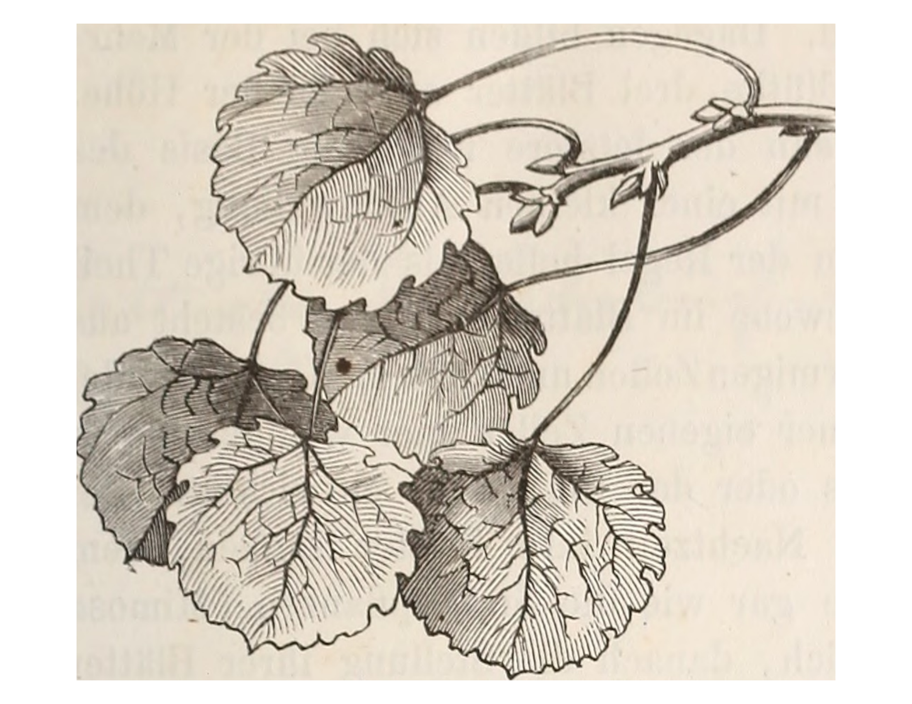
Your height, the amount of RNA transcribed from a given gene, what you ate last Tuesday: all of these are phenotypes. Nearly any phenotype we can choose to measure about an organism represents the outcome of the information encoded by their genome played out through an incredibly complicated developmental, physiological and/or behavioural processes that in turn interact with a myriad of environmental and stochastic factors. Honestly it boggles the mind how organisms work as well as they do, let alone that I managed to eat lunch last Tuesday.
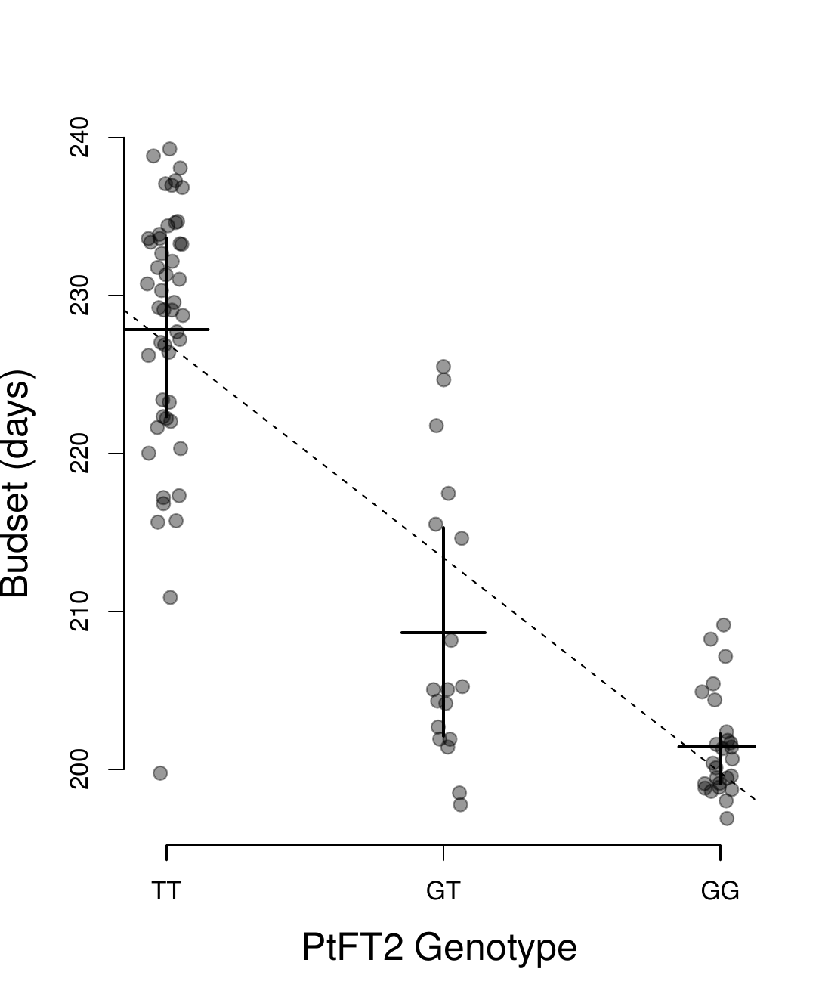
There are many different ways to think about studying the path from genotype through to phenotype. The one we will take here is to think about how phenotypic variation among individuals in a population arises as a result of genetic variation in the population. One simple way to measure this genotype-phenotype relationship is to calculate the phenotypic mean for each genotype at a locus. For example, Wang et al. (2018) explored the genetic basis of budset time in European aspen (Populus tremula); the effect of one specific SNP on that phenotype is shown in in Figure 7.2. Budset timing is a key trait underlying local adaptation to varying growing season length. The associated SNP falls in a gene (PtFT2) that is known to play a strong role in flowering time regulation in other plants.
One way for us to assess the relationship between genotype and phenotype is to find the best fitting linear line through the data, i.e. fit a linear regression of phenotypes for our individuals on their genotypes at a particular SNP (\(l\)):
\[X \sim \mu + a_l G_{l} \tag{7.1}\]
In the equation above, \(X\) is a vector of the phenotypes of a set of individuals and \(G_{l}\) is our vector of genotypes at locus \(l\), with \(G_{i,l}\) taking the value 0, 1, or 2 depending on whether our individual \(i\) is homozygote, heterozygote, or the alternate homozygote at our locus of interest. Here \(\mu\) is our phenotypic mean. The slope of this regression line (\(a_l\)) has the interpretation of being the average effect of substituting a copy of allele \(2\) for a copy of allele \(1\). In our aspen example the slope is \(-13.6\), i.e. swapping a single \(T\) for a \(G\) allele moves the budset forward by \(13.6\) days, such that the \(GG\) homozygote is predicted to set buds \(27.2\) days earlier than the \(TT\) homozygote.
As a measure of the significance of this genotype-phenotype relationship, we can calculate the p-value of our regression. To try to identify loci that are associated with our trait genome-wide, we can conduct this regression at each SNP we genotype in the genome. One common way to display the results of such an analysis (called a genome-wide association study or GWAS for short) is to plot the minus logarithm of the p-value for each SNP along genome (a so-called Manhattan plot). Here’s one from Wang et al. (2018) for their aspen budset phenotype
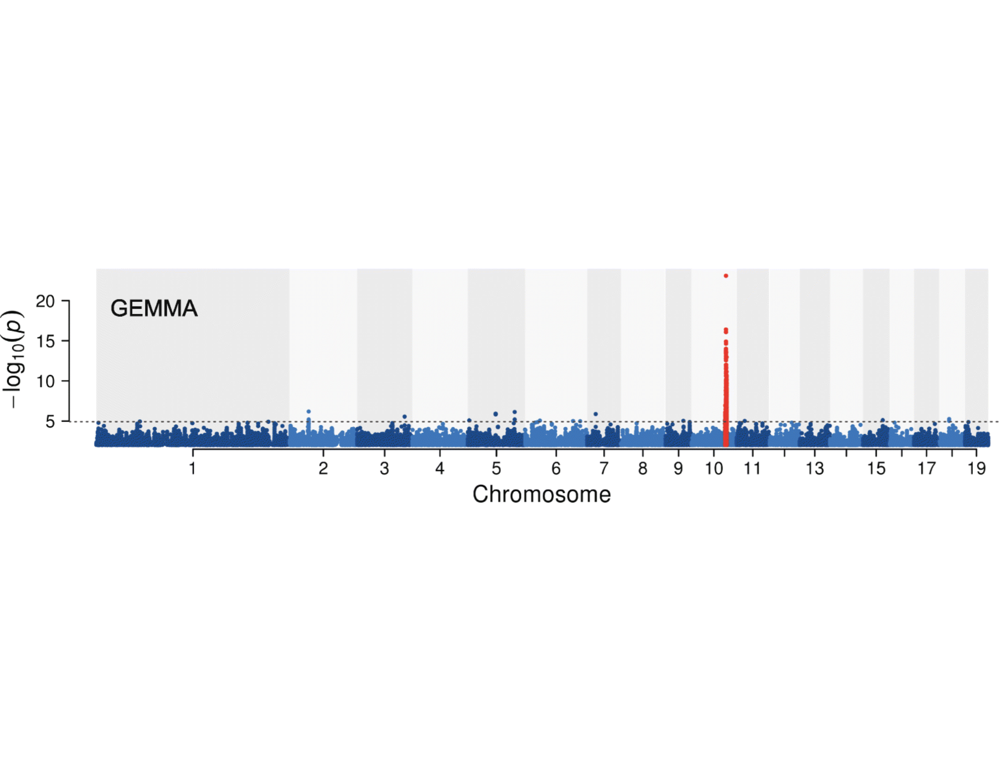
The SNP with the most significant p-value is SNP in PtFT2. Note that other SNPs in the surrounding region also light up as showing a significant association with budset timing. This is because loci that are in linkage disequilibrium with a functional locus may in turn show an association, not because they directly affect the phenotype, but simply because the genotypes at the two loci are themselves non-randomly associated. Below is a zoomed in version (Figure 2 in Wang et al. (2018)) with SNPs coloured by the strength of their LD with the putatively functional SNP.
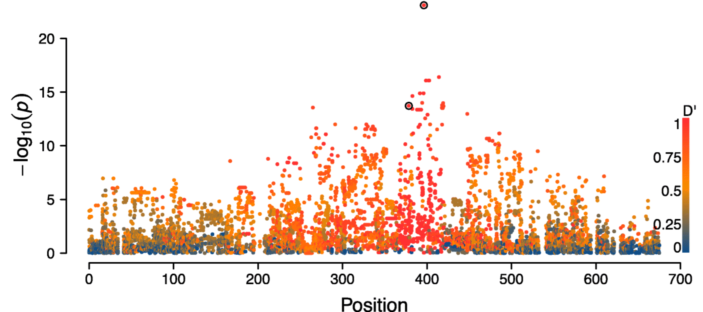
Note how SNPs in strong LD with the functional allele (redder points) have more significant p-values.
Variation in some traits seems to have a relatively simple genetic basis. In our aspen example there is one clear large-effect locus, which explains 62% of the variation in budset. Note that even in this case, where we have an allele with a very strong effect on a phenotype, this is not an allele for budset, nor is PtFT2 a gene for budset. It is an allele that is associated with budset in the sampled environments and populations. In a different set of environments, this allele’s effects may be far smaller, and a different set of alleles may contribute to phenotype variation. PtFT2, the gene our focal SNP falls close to, is just one of many genes and molecular pathways involved in budset. A mutant screen for budset may uncover many genes with larger effects; this gene is just a locus that happens to be polymorphic in this particular set of genotyped individuals.
While phenotypic variation for some phenotypes has a relatively simple genetic basis, many phenotypes are likely much more genetically complex, involving the functional effect of many alleles at hundreds or thousands of polymorphic loci. For example hundreds of small effect loci affecting human height have been mapped in European populations to date. Such genetically complex traits are called polygenic traits.
In this chapter, we will use our understanding of the sharing of alleles between relatives to understand the phenotypic resemblance between relatives in quantitative phenotypes. This will allow us to understand the contribution of genetic variation to phenotypic variation. In the next chapter, we will then use these results to understand the evolutionary change in quantitative phenotypes in response to selection.
7.1 A simple additive model of a trait
Let’s imagine that the genetic component of the variation in our trait is controlled by \(L\) autosomal loci that act in an additive manner. The frequency of allele \(1\) at locus \(l\) is \(p_l\), with each copy of allele \(1\) at this locus increasing your trait value by \(a_l\) above the population mean. The phenotype of an individual, let’s call her \(i\), is \(X_i\). Her genotype at SNP \(l\) is \(G_{i,l}\). Here \(G_{i,l}=0,~1,\) or \(2\), representing the number of copies of allele \(1\) she has at this SNP. Her expected phenotype, given her genotype at all \(L\) SNPs, is then
\[\mathbb{E} (X_i | G_{i,1},\cdots,G_{i,L}) =\mu + X_{A,i} = \mu+\sum_{l=1}^L G_{i,l} a_{l} \tag{7.2}\]
where \(\mu\) is the mean phenotype in our population, and \(X_{A,i}\) is the deviation away from the mean phenotype due to her genotype. Now in reality the phenotype is a function of the expression of those alleles in a particular environment. Therefore, we can think of this expected phenotype as being an average across a set of environments that occur in the population.
When we measure our individual’s observed phenotype we see
\[X_i = \mu+X_{A,i} + X_{E,i} \tag{7.3}\]
where \(X_E\) is the deviation from the mean phenotype due to the environment. This \(X_E\) includes the systematic effects of the environment our individual finds herself in and all of the noise during development, growth, and the various random insults that life throws at our individual. If a reasonable number of loci contribute to variation in our trait then we can approximate the distribution of \(X_{A,i}\) by a normal distribution due to the central limit theorem (see Figure 7.5). 1 Thus if we can approximate the distribution of the effect of environmental variation on our trait (\(X_{E,i}\)) also by a normal distribution, which is reasonable as there are many small environmental effects, then the distribution of phenotypes within the population (\(X_i\)) will be normally distributed (see Figure 7.5).
1 The central limit theory is discussed briefly in the math appendix section A.2.7.
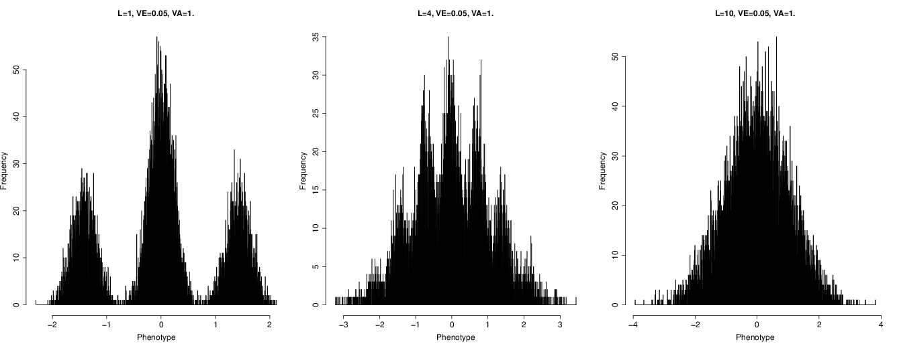
Note that as this is an additive model; we can decompose Equation 7.3 into the effects of the two alleles at each locus and rewrite it as
\[X_i = \mu + X_{iM}+X_{iP} +X_{iE} \tag{7.4}\]
where \(X_{iM}\) and \(X_{iP}\) are the contribution to the phenotype of the alleles that our individual received from her mother (maternal alleles) and father (paternal alleles) respectively. This will come in handy in just a moment when we start thinking about the phenotypic covariance of relatives.
Now obviously this model seems silly at first sight as alleles don’t only act in an additive manner, as they interact with alleles at the same loci (dominance) and at different loci (epistasis). Later we’ll relax this assumption, however, we’ll find that if we are interested in evolutionary change over short time-scales it is actually only the “additive component” of genetic variation that will (usually) concern us. We will define this more formally later on, but for the moment we can offer the intuition that parents only get to pass on a single allele at each locus on to the next generation. As such, it is the effect of these transmitted alleles, averaged over possible matings, that is an individual’s average contribution to the next generation (i.e. the additive effect of the alleles that their genotype consists of).
Additive genetic variance and heritability
As we are talking about an additive genetic model, we’ll talk about the additive genetic variance (\(V_A\)), the phenotypic variance due to the additive effects of segregating genetic variation. This is a subset of the total genetic variance if we allow for non-additive effects.
The variance of our phenotype across individuals (\(V_P\)) we can write as
\[V_P = Var(X)= Var(X_A) + Var(X_E) = V_A+V_E \tag{7.5}\]
In writing the phenotypic variance as a sum of the additive and environmental contributions, we are assuming that there is no covariance between \(X_{G,i}\) and \(X_{E,i}\) i.e. there is no covariance between genotype and environment. 2
2 In this section we’re making use of the properties of the variance of a random variable, see math appendix Equation A.24
Our additive genetic variance can be written as
\[V_A =Var(X_A) =\sum_{l=1}^L Var(G_{i,l} a_{l}) \tag{7.6}\]
where \(Var(G_{i,l} a_{l})\) is the contribution of locus \(l\) to the additive variance among individuals. Assuming random mating, and that our loci are in linkage equilibrium, we can write our additive genetic variance as
\[V_A = \sum_{l=1}^L a_{l}^2 2 p_l(1-p_l) \tag{7.7}\]
where the \(2 p_l(1-p_l)\) term follows from the binomial sampling of two alleles per individual at each locus. 3
3 These results follow from the properties of variance in math appendix Equation A.24.
Question 7.1 You have two biallelic SNPs contributing to variance in human height. At the first SNP you have an allele with an additive effect of \(5\)cm which is found at a frequency of \({}^{1}\!/\!{}_{10,000}\). At the second SNP you have an allele with an additive effect of \(-0.5\)cm segregating at 50% frequency. Which SNP contributes more to the additive genetic variance? Explain the intuition of your answer.
Above in Equation 7.4 we decomposed the additive genetic component of \(X_{A,i}\) as \(X_{M,i} + X_{P,i}\) the additive contributions of the maternal and paternal derived alleles in the \(i^{th}\) individual. Similarly we can decompose the additive genetic variance \(V_A\) as
\[\begin{aligned} V_A&= Var(X_A) = Var(X_{M,i} ) + Var(X_{P,i} ) \\ Var(X_{M,i} ) & =Var(X_{P,i} ) = {}^{V_{A}}\!/\!{}_{2} \end{aligned} \tag{7.8}\]
assuming that our individuals are mating at random and that maternal and paternal alleles are equal in their effect in offspring. 4
4 Genetic imprinting violates this assumption, but is relatively rare.
5 Each of these was chosen as the SNP with the strongest signal of association with height in 1700 roughly independent bins spaced across the genome.
An example of the additive basis of variation using polygenic scores. Now we don’t usually get to see the individual loci contributing to highly polygenic traits. Instead, we only get to see the distribution of the trait in the population. However, with the advent of GWAS in human genetics we can see some of the underlying genetics using the many trait-associated loci identified to date. Using the estimated effect sizes at each locus, each one of which is tiny, we can calculate the weighted sum over an individual’s genotype as in Equation 7.2. This weighted sum is called the individual’s polygenic score. To illustrate how polygenic scores work, we can take a set of 1700 SNPs5. The effects of these SNPs are tiny; the median, absolute additive effect size is \(0.07\)cm. Figure 7.6 shows the distribution of a thousand individuals’ polygenic scores calculated using these 1700 SNPs (simulated genotypes using the UKBB frequencies). The standard deviation of these polygenic scores \(\sim 2\)cm. The individuals with higher polygenic scores for height are predicted to be taller than the individuals with lower polygenic scores.
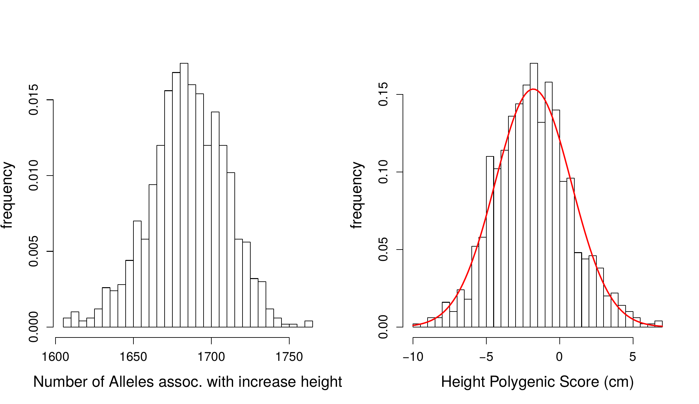
The narrow sense heritability. We would like a way to think about what proportion of the variation in our phenotype across individuals is due to genetic differences as opposed to environmental differences. Such a quantity will be key in helping us think about the evolution of phenotypes. For example, if variation in our phenotype had no genetic basis, then no matter how much selection changes the mean phenotype within a generation the trait will not change over generations.
We’ll call the proportion of the variance that is genetic the heritability, and denote it by \(h^2\). We can then write heritability as
\[h^2 = \frac{Var(X_A)}{V_P} = \frac{V_A}{V_P} \tag{7.9}\]
Remember that we are thinking about a trait where all of the alleles act in a perfectly additive manner. In this case our heritability \(h^2\) is referred to as the narrow sense heritability, the proportion of the variance explained by the additive effect of our loci. When we allow dominance and epistasis into our model, we’ll also have to define the broad sense heritability (the total proportion of the phenotypic variance attributable to genetic variation).
The narrow sense heritability of a trait is a useful quantity; indeed we’ll see shortly that it is exactly what we need to understand the evolutionary response to selection on a quantitative phenotype. We can calculate the narrow sense heritability by using the resemblance between relatives. For example, if the phenotypic differences between individuals in our population were solely determined by environmental differences experienced by these different individuals, we should not expect relatives to resemble each other any more than random individuals drawn from the population. Now the obvious caveat here is that relatives also share an environment, so they may resemble each other due to shared environmental effects.
Note that the heritability is a property of a sample from the population in a particular set of environments at a particular time. Changes in the environment may change the phenotypic variance. Changes in the environment may also change how our genetic alleles are expressed through development and so change \(V_A\). Thus estimates of heritability are not transferable across environments or populations.
The covariance between relatives
People have long been fascinated by the resemblance between relatives, particularly twins (see Figure 7.7). Families hold a special place in quantitative genetics, as remarkably we can use the resemblance between relatives to directly estimate the heritability and covariance of traits. To see this we can calculate the covariance in phenotype between pairs of individuals (\(1\) and \(2\)) who have phenotypes \(X_1\) and \(X_2\) respectively.6 To think about imagine plotting the phenotypes of, say, sisters against each other. The x and y coordinates of each point will be the, say, heights of the pair of siblings. Do tall women tend to have tall sisters, do short women tend to have short sisters? How much do their phenotypes covary? If some of the variation in our phenotype is genetic we expect identical twins to resemble each other more than full siblings, who in turn will resemble each other more than half-sibs and so on out (see Figure 7.8). Under our simple additive model of phenotypes we can write the covariance as
6 We’ll be dealing with covariance a lot this chapter, see math appendix section A.2.6 for more background.
\[Cov(X_1,X_2) = Cov\left( X_{1M}+X_{1P}+X_{1E},~ X_{2M}+X_{2P}+X_{2E} \right) \tag{7.10}\]
We can expand this out in terms of the covariance between the various components in these sums.
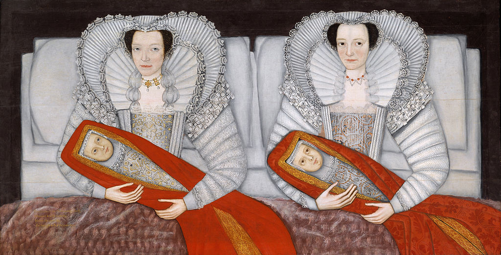

To make our task easier, we will make two commonly made assumptions:
We can ignore the covariance of the environments between individuals (i.e. \(Cov(X_{1E},X_{2E})=0\))
We can ignore the covariance between the environment of one individual and the genetic variation in another individual (i.e. \(Cov(X_{1E},(X_{2M}+X_{2P}))=0\)). 7
7 We can actually incorporate these effects into the definition of additive genetic variance, but here we’ll choose not to for simplicity.
The failure of these assumptions to hold can undermine our estimates of heritability, but we’ll return to that later. Moving forward with these assumptions, we can simplify our original expression above and write our phenotypic covariance between our pair of individuals as
\[Cov(X_1,X_2) = Cov(X_{1M},X_{2M})+Cov(X_{1M},X_{2P})+Cov(X_{1P},X_{2M}) +Cov(X_{1P},X_{2P}) \tag{7.11}\]
This equation is saying that, under our simple additive model, we can see the covariance in phenotypes between individuals as the covariance between the maternal and paternal allelic effects in our individuals. We can use our results about the sharing of alleles between relatives to obtain these covariance terms. But before we write down the general case, let’s quickly work through some examples.
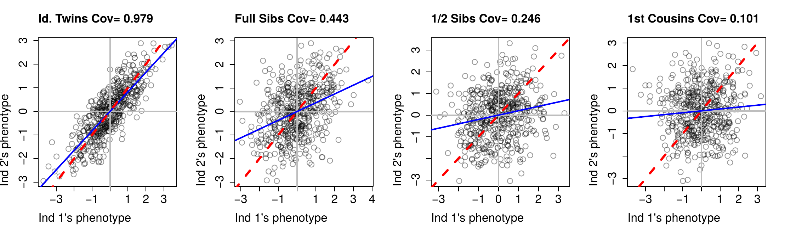
The covariance between identical twins. Let’s first consider the case of a pair of identical twins, monzygotic (MZ) twins, from two unrelated parents. Our pair of twins share their maternal and paternal allele identical by descent (\(X_{1M}=X_{2M}\) and \(X_{1P}=X_{2P}\)). As their maternal and paternal alleles are not correlated draws from the population, i.e. have no probability of being \(IBD\) as we’ve said the parents are unrelated, the covariance between their effects on the phenotype is zero (i.e. \(Cov(X_{1P},X_{2M})=Cov(X_{1M},X_{2P})=0\)). In that case, Equation 7.11 is
\[Cov(X_1,X_2) = Cov(X_{1M},X_{2M})+Cov(X_{1P},X_{2P}) = Var(X_{1M}) +Var(X_{1P}) = V_A \tag{7.12}\]
where the middle step follows from the fact the maternal (or similarly the paternal) allele in a pair of twins is the same allele so \(Cov(X_{1M},X_{2M})=Cov(X_{1M},X_{1M})=Var(X_{1M})\), as the covariance of random variable with itself is just its variance, and then the additive variance of the maternal allele contribution is \(Var(X_{1M})={}^{V_A}\!/\!{}_{2}\) following from Equation 7.8.
To calculate the narrow sense heritability we could then in principal divide the covariance of our pairs of MZ twins (MZ\(_1\) and MZ\(_2\)) by the trait variance to give
\[h^2 = \frac{Cov(\text{MZ}_1, \text{MZ}_2) }{V_P} = \rho_{\text{MZ}} \tag{7.13}\]
where \(\rho_{\text{MZ}}\) is the correlation of pairs of MZ twins (see Appendix Equation A.42 for more on correlations). For example, we could estimate the heritability of a measure of body from the MZ correlation in Figure 7.9. In general, this simple estimator isn’t great as the correlation of identical twins includes the effects of the shared family environment of the twins (i.e. \(Cov(X_{1E},X_{2E})\)).
Moreover, it can be inflated by non-additive effects as identical twins don’t just share alleles, they share their entire genotypes, and thus resemble each other in phenotype also because of shared dominance effects (we’ll discuss non-additive effects in Section 7.1.3). Better twin-based estimates of heritability are commonly used based on the comparison of MZ vs twins that bypass some of these issues.
The covariance in phenotype between parent and child.
Children resemble their biological parents because children inherit their genome from their parents (putting aside shared environments for the moment). If a mother and father are unrelated individuals, i.e. they are two random draws from the population, then this mother and her child share one allele IBD at each locus (i.e. \(r_1=1\) and \(r_0=r_2=0\)). Let’s assume that our mother (ind 1) transmits her paternal allele to the child (ind 2), in which case \(X_{P1}=X_{M2}\), and so \(Cov(X_{P1},X_{M2})=Var(X_{P1})=\tfrac{1}{2} V_A\), and all the other covariances in Equation 7.11 are zero. We’d also arrive at this result if instead we had thought of the mother transmitting her own maternal allele. Thus \(Cov(X_1,X_2) = \tfrac{1}{2} V_A\), we can leverage this form of the covariance to directly estimate \(h^2\) by regression.
We can estimate the narrow sense heritability through the regression of child’s phenotype on the parental mid-point phenotype. The parental mid-point phenotype is simply the average of the mum and dad’s phenotype. See Figure 7.10 for an example from song sparrows.
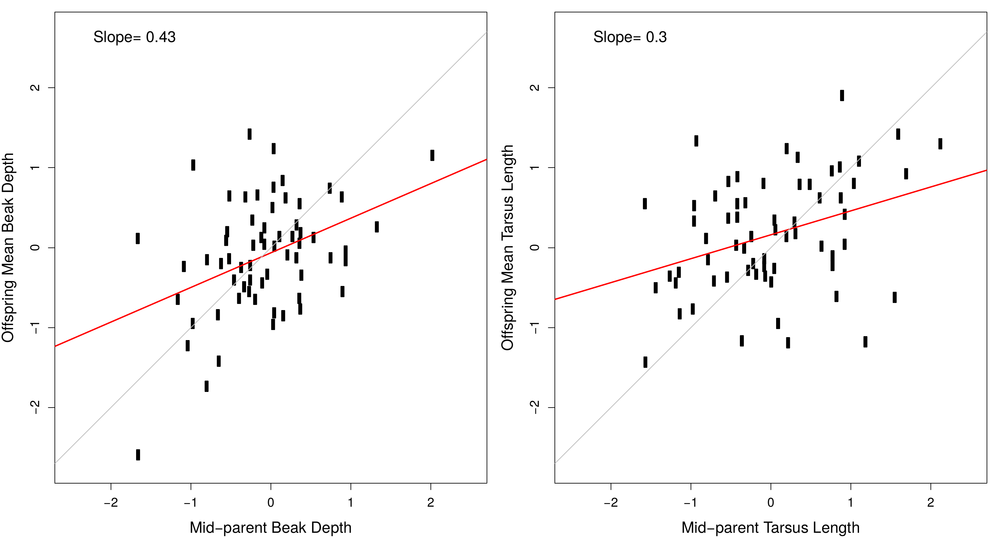
We denote the child’s phenotype by \(X_{kid}\) and mid-point phenotype by \(X_{\textrm{mid}}\), so that if we take the regression \(X_{\textrm{kid}} \sim X_{\textrm{mid}}\) this regression has slope \(\beta = Cov(X_{\textrm{kid}},X_{\textrm{mid}})/Var(X_{\textrm{mid}})\). The covariance of \(Cov(X_{\textrm{kid}},X_{\textrm{mid}})=\tfrac{1}{2} V_A\), and \(Var(X_{\textrm{mid}}) = \tfrac{1}{2} V_P\), as by taking the average of the parents we have halved the variance, such that the slope of the regression is
\[\beta_{\textrm{mid}, \textrm{kid}}= \frac{Cov(X_{\textrm{kid}},X_{\textrm{mid}})}{Var(X_{\textrm{mid}})}= \frac{V_A}{V_P} = h^2 \tag{7.14}\]
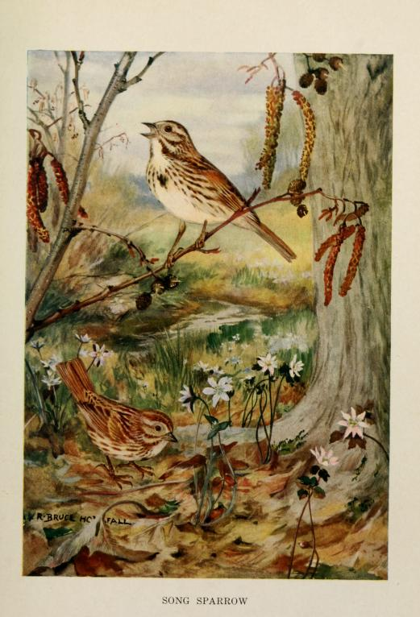
8 See math appendix Equation A.45 for more on regression slopes.
i.e. the regression of the child’s phenotype on the parental midpoint phenotype is an estimate of the narrow sense heritability.8 If much of the phenotypic variation is due to the (additive) differences in genotypes among individuals (\(h^2 \approx 1\)), then children will closely resemble their parents. Conversely if much of the variation is environmental (\(h^2 \approx 0\)), and there is no shared environment between parent and child, children will not resemble their parents.
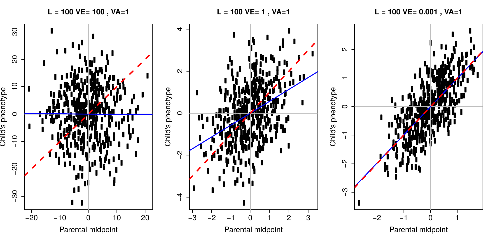
Applying this heritability estimate to the Song sparrow sample we find \(h^2=0.43\) and \(h^2=0.3\) for beak depth and tarsus length respectively from Figure 7.10. So in Smith and Zach (1979) analysis, for example, \(30\%\) of the variance in tarsus length is atttributal to the additive effect of genetic differences among individuals. Smith and Zach (1979) also regressed the average offspring phenotype against their fathers or mothers, giving a slope of \(\beta_{\textrm{dad}, \textrm{avg.kid}}\) and \(\beta_{\textrm{mum}, \textrm{avg.kid}}\). For tarsus length, for example, they found \(\beta_{\textrm{dad}, \textrm{avg.kid}}= 0.19\) and \(\beta_{\textrm{mum}, \textrm{avg.kid}}= 0.17\). Following a similar argument to that in Equation 7.14 we find that these slopes are \(\beta_{\textrm{dad}, \textrm{avg.kid}}= {}^{{}^{V_{A}}\!/\!{}_{2}}\!/\!{}_{V_P} = {}^{h^2}\!/\!{}_{2}\), and the same for mums. Thus the regression of offspring’s phenotype on a particular parent is an estimate of half the narrow-sense heritability, in line with the reduced slopes found by Smith and Zach (1979), this halfing of the slope is due to the fact that a single parent’s phenotype is a noisier estimate of the parental mid-point and so less informative about the child s phenotype. These parent specific estimates of heritability are particularly useful as they allow us to investigate sex-specific inheritance and sexual dimorphism (we’ll explore this in a later section).
Estimating heritability by these various parent-offspring regression have the issue of not controlling for environmental correlations between parent and offspring, which can inflate our estimates of heritability (as we will mistake environmentally mediated resemblance for genetics). Despite its issues, this measure of heritability provides useful intuition and is directly relevant to our discussion of the response to selection in the next chapter. That’s because our regression allows us to attempt to predict the phenotype of the child given the phenotypes of the parents; how well we can do this depends on the slope. See Figure 7.12 for examples. If the slope is close to zero then the parental phenotypes hold little information about the phenotype of the child, while if the slope is close to one then the parental mid-point is a good predictor of the child’s phenotype. As we will see, natural selection will only efficiently drive evolution if children resemble their parents.
Thinking about our prediction of child’s phenotpye more formally, the expected phenotype of the child given the parental phenotypes is
\[\mathbb{E}(X_{kid} | X_{mum},X_{dad}) = \mu + \beta_{mid,kid}(X_{mid} - \mu) =\mu + h^2(X_{mid} - \mu) \tag{7.15}\]
which follows from the definition of linear regression. So to find the child’s predicted phenotype, we simply take the mean phenotype and add on the difference between our parental mid-point and the population mean, multiplied by our narrow sense heritability.
The confounding effect of the shared environment. Children resemble their biological parents both because they share alleles but also because they can share environments. For example, mother birds who are lucky enough to live in a territory with good nutrition available can in turn provide their offspring better nutrition, while mothers born in poor territories will be able to provide less nutrition to their offspring. This covariance in environment will increase the covariance in traits among relatives, e.g. weight between mother bird and child, and falsely bias our estimates of heritability upward if we fail to account for the shared environment. (Technically what is happening here is that the shared environment causes \(Cov(X_{1E},X_{2E})>0\) violating the assumption we made in deriving Equation 7.11.)
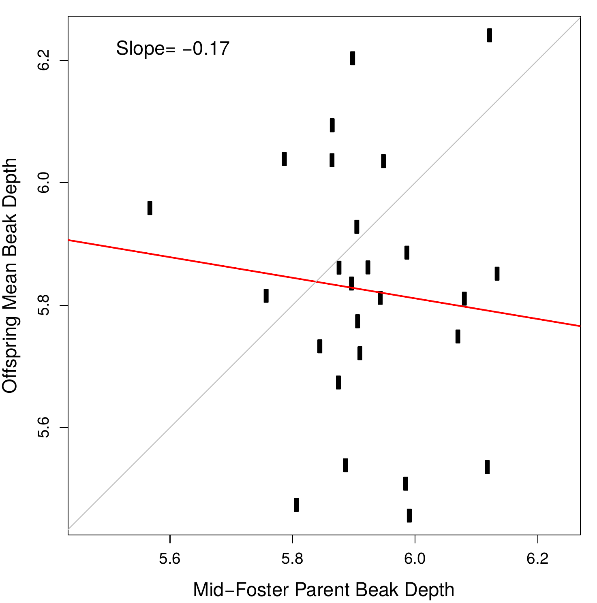
Raising the organisms in the lab could remove much of the potential for shared environment between parent and offspring, but it also removes much of the environmental variation and we (as evolutionary geneticists) are usually not primarily interested in knowing the heritability in the lab bur rather in the field. In some organisms, notably plants, we can begin to sidestep these issues by raising offspring in a common set of randomized field conditions (a so called “common garden”). Another option is cross-foster animals, for example Smith and Dhondt (1980) returned to the song sparrow population and swapped eggs between parents nests. They found that the covariance between biological parents and children was still high despite these children being raised in a different nest, but that there was no significant covariance between foster parents and their non-biological children (see Figure 7.13 for beak depth). This suggests that family environment is not confounding the estimate of heritability in this song sparrow sample.
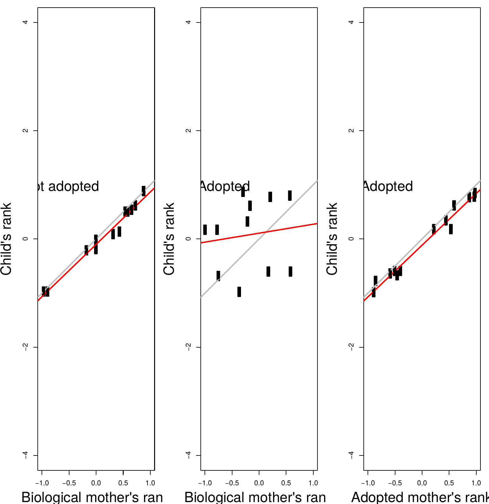
Spotted hyenas (Crocuta crocuta) live in female dominated groups (‘clans’) that are highly social, with some clans having over a hundred members. The social rank of a hyena determines many aspects of their lives. Daughters usually achieve similar rank to their mothers, i.e. mother and daughter ranks are highly correlated (Left panel, Figure 7.14). This could suggest that social rank has a high heritability, as could be the case if rank is determined by body size and body size has a high additive genetic variance.
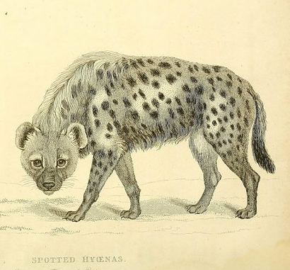
Alternatively, social rank could be partially determined by daughters sharing their social rank with their mothers through gaining access to their mother’s social connections. To test between these ideas, East et al. (2009) made use natural cases of adoption, when a female takes unrelated pups into her family. East et al. (2009) found that in such cases the daughter’s rank was uncorrelated with her biological mother’s rank (middle panel, Figure 7.14) but strongly correlated with the adopted mother’s rank (right panel, Figure 7.14). Thus the resemblance between mother and child for non-adopted hyenas seems to be almost entirely due to the non-genetic inheritance of social rank through the shared environment of daughters with their mothers (biological or adopted).
However, such manipulations or common gardens are often impossible in many systems, and issues of shared environmental covariance due to maternal resources from egg (or seed) can still present in measures of heritability from parents and child. Thus researchers often make use of a variety of different biological relationships to estimate heritability.
The covariance between general pairs of relatives under an additive model.
The above examples make clear that to understand the covariance between phenotypes of relatives, we simply need to think about the alleles they share IBD. Consider a pair of relatives (\(1\) and \(2\)) with a probability \(r_0\), \(r_1\), and \(r_2\) of sharing zero, one, or two alleles IBD respectively. When they share zero alleles \(Cov((X_{1M}+X_{1P}),(X_{2M}+X_{2P}))=0\), when they share one allele \(Cov((X_{1M}+X_{1P}),(X_{2M}+X_{2P}))= Var(X_{1M})=\frac{1}{2}V_A\), and when they share two alleles \(Cov((X_{1M}+X_{1P}),(X_{2M}+X_{2P}))= V_A\). Therefore, the general covariance between two relatives is
\[Cov(X_1,X_2) = r_0 \times 0 + r_1 \frac{1}{2}V_A + r_2 V_A = 2 F_{1,2} V_A \tag{7.16}\]
where \(F_{1,2}\) is our coefficient of kinship, i.e. the probability that two alleles sampled at random from our pair individuals \(1\) and \(2\) are IBD (see Equation 2.4). So under a simple additive model of the genetic basis of a phenotype, to measure the narrow sense heritability we need to measure the covariance between pairs of relatives (assuming that we can remove the effect of shared environmental noise). From the covariance between relatives we can calculate \(V_A\), and we can then divide this by the total phenotypic variance to get \(h^2\).
Question 7.2 A) In polygynous red-winged blackbird populations (i.e. males mate with several females), paternal half-sibs can be identified. Suppose that the covariance of tarsus lengths among half-sibs is 0.25 \(cm^2\) and that the total phenotypic variance is 4 \(cm^2\). Use these data to estimate \(h^2\) for tarsus length in this population.
B) Why might paternal half-sibs be preferable for measuring heritability than maternal half-sibs?
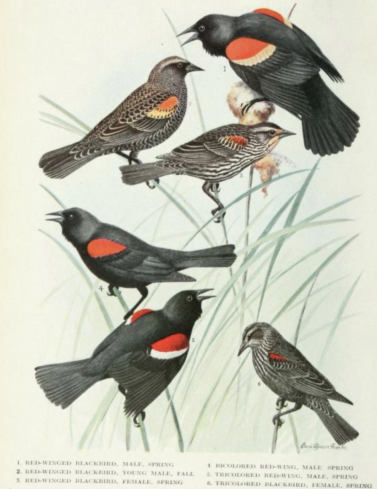
Estimating additive genetic variance across a variety of different relationships (The animal model).
In many natural populations we may have access to individuals with a range of different relationships to each other (e.g. through monitoring of the paternity of individuals), but relatively few pairs of individuals for a specific relationship (e.g. sibs). We can try and use this information on various relatives as fully as possible in a mixed model framework. Building from Equation 7.3, we can write an individual’s phenotype \(X_i\) as
\[X_i = \mu + X_{A,i} + X_{E,i} \tag{7.17}\]
where \(X_{E,i} \sim N(0,V_E)\) and \(X_{A,i}\) is normally distributed across individuals with covariance matrix \(V_A A\), where the the entries for a pair of individuals i and j are \(A_{ij}= 2 F_{i,j}\) and \(A_{ii}= 1\). Given the matrix \(A\) we can estimate \(V_A\). We can also add fixed effects into this model to account for generation effects, additional mixed effects could also be included to account for shared environments between particular individuals (e.g. a shared nest). This approach is sometimes called the “animal model”, and is widely used to in modern quantitative genetics to estimate genetic variances and heritabilities.
Non-additive variation.
Up to now we’ve assumed that our alleles contribute to our phenotype in an additive fashion. However, that does not have to be the case as there may be non-additivity among the alleles present at a locus (dominance) or among alleles at different loci (epistasis). We can accommodate these complications into our models. We do this by partitioning our total genetic variance into independent variance components. We’ll see that dominant and epistatically interacting loci can contribute to the additive genetic variance. In constructing these variance components models we’ll assume that we know the alleles contributing to variation in our trait and their effects, but in reality we rarely know these. However, as we’ll see we don’t need to know these details and we can partition our variance and estimate additive variance and other forms of non-additive variation using the resemblance between various types of relatives.
Dominance. To understand the effect of dominance, let’s consider how the allele that a parent transmits influences their offspring’s phenotype. A parent transmits one of their two alleles at a locus to their offspring. Assuming that individuals mate at random, this allele is paired with another allele drawn at random from the population. For example, assume your mother transmitted an allele 1 to you: with probability \(p\) it would be paired with another allele 1, and you would be a homozygote; and with probability \(q\) it’s paired with a 2 allele and you’re a heterozygote.
Now consider an autosomal biallelic locus \(\ell\), with frequency \(p\) for allele 1, and genotypes \(0\), \(1\), and \(2\) corresponding to how many copies of allele \(1\) individuals carry. We’ll denote the mean phenotype of an individual with genotype \(0\), \(1\), and \(2\) as \(\overline{X}_{\ell,0}\), \(\overline{X}_{\ell,1}\), \(\overline{X}_{\ell,2}\) respectively. This mean is taking an average phenotype over all the environments and genetic backgrounds the alleles are present on. We’ll mean center (MC) these phenotypic values, setting \(\overline{X}'_{\ell,0} = \overline{X}_{\ell,0} - \mu\), and likewise for the other genotypes.
We can think about the average (marginal) MC phenotype of an individual who received an allele 1 from their parent as the average of the MC phenotype for heterozygotes and 11 homozygotes, weighted by the probability that the individual has these genotypes, i.e. the probability they receive an additional allele \(1\) or an allele \(2\) from their other parent:
\[a_{\ell, 1} = p\overline{X}'_{\ell,2} + q\overline{X}'_{\ell,1}, \tag{7.18}\]
Similarly, if your parent transmitted an 2 allele to you, your average MC phenotype would be
\[~~ a_{\ell, 2} = p\overline{X}'_{\ell,1} + q\overline{X}'_{\ell,0} \tag{7.19}\]
Let’s now consider the average phenotype of an offspring by how many copies of the allele \(1\) they carry
| genotype: | 0, | 1, | 2. |
|---|---|---|---|
| additive genetic value: | \(a_{\ell,2}+ a_{\ell,2}\), | \(a_{\ell,1}+a_{\ell,2}\), | \(a_{\ell,1}+a_{\ell,1}\) |
i.e. the mean phenotype of each genotypes’ offspring averaged over all possible matings to other individuals in the population (assuming individuals mate at random). These are the additive MC genetic values (breeding values) of our genotypes. Here we are simply adding up the additive contributions of the alleles present in each genotype and ignoring any non-additive effects of genotype.
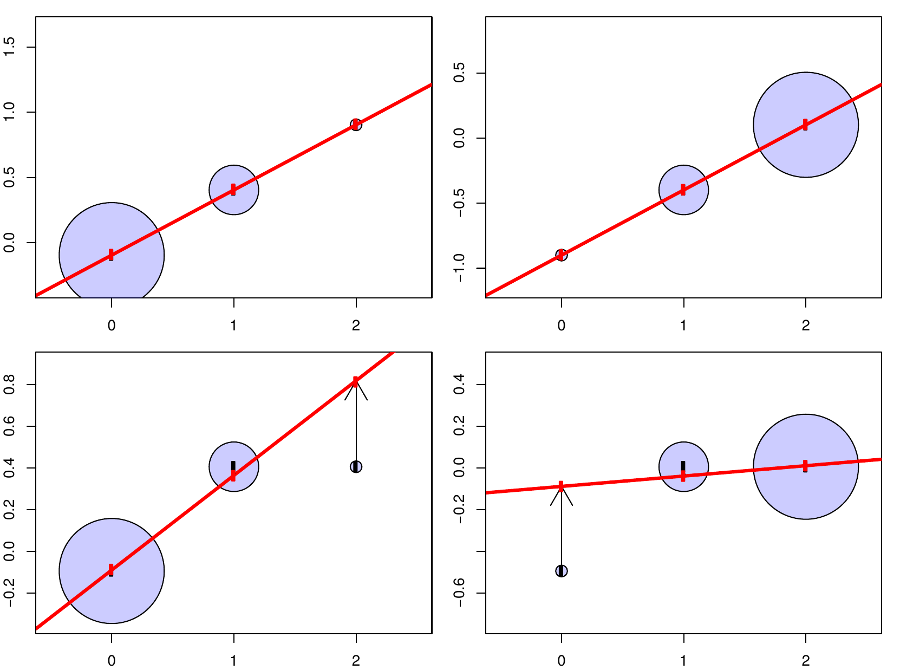
To illustrate this, in Figure 7.17 we plot two different cases of dominance relationships; in the top row an additive polymorphism and in the second row a fully dominant allele. The additive genetic values of the genotypes are shown as red dots. Note that the additive values of the genotypes line up with the observed MC phenotypic means in the top row, when our alleles interact in a completely additive manner. Our additive genetic values always fall along a linear line (the red line in our figure). The additive values are falling along the best fitting line of linear regression for our population, when phenotype is regressed against the additive genotype (\(0\), \(1\), \(2\) copies of allele 1) across all individuals in our population. Note in the dominant case the additive genetic values differ from the observed phenotypic means, and are closer to the observed values for the genotypes that are most common in the population.
The difference in the additive effect of the two alleles \(a_{\ell, 2}-a_{\ell, 1}\) can be interpreted as an average effect of swapping an allele 1 for an allele 2; we’ll call this difference \(\alpha_{\ell}=a_{\ell, 2}-a_{\ell, 1}\). Our \(\alpha_{\ell}\) is also the slope of the regression of phenotype against genotype (the red line in Figure 7.17). Note that the slope of our regression of phenotype on genotype (\(\alpha_{\ell}\)) does not depend on the population allele frequency for our completely additive locus (top row of 7.17). In contrast, when there is dominance, the slope between genotype and phenotype (\(\alpha_{\ell}\)) is a function of allele frequency (bottom row of 7.17). When a dominant allele (1) is rare there is a strong slope of phenotype on genotype, bottom left Figure 7.17. This strong slope is because replacing a single copy of the 2 allele with a 1 allele in an individual has a big effect on average phenotype, as it will most likely move an individual from being a 22 homozygote to being a 12 heterozygote. In contrast, when the dominant allele (1) is common in the population, replacing a 2 allele by a 1 allele in an individual on average has little phenotypic effect, leading to a weak slope (bottom right Figure 7.17). This small effect is because as we are mainly turning heterozygotes into homozygotes (11), who have the same mean phenotype as each other.
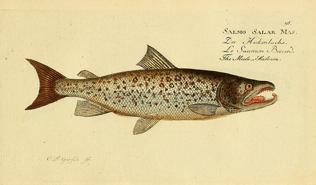
As an example of how dominance and population allele frequencies can change the additive effect of an allele, let’s consider the genetics of the age of sexual maturity in Atlantic Salmon. A single allele of large effect segregates in Atlantic Salmon that influences the sexual maturation rate in salmon (Ayllon et al. 2015; Barson et al. 2015), and hence the timing of their return from the sea to spawn (sea age). The allele falls close to the autosomal gene VGLL3 (Cousminer et al. 2013 variation at this gene in humans also influences the timing of puberty). The left side of Figure 7.19 shows the age at sexual maturity in males. The L allele associated with slower sexual maturity is recessive in males. While the LL homozygotes mature on average a whole year later, the additive effect of the allele is weak while the L allele is rare in the population. The right panel shows the effect of the L allele in females. Note how the allele is much more dominant in females, and has a much more pronounced additive effect. The dominance of an allele is not a fixed property of the allele but rather a statement of the relationship of genotype to phenotype, such that the dominance relationship between alleles may vary across phenotypes and contexts (e.g. sexes).
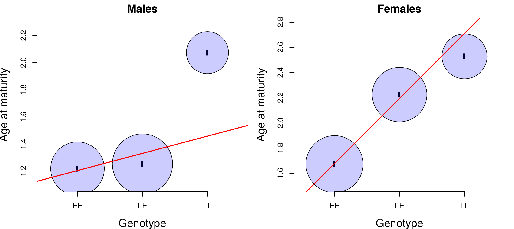
The variance in the population phenotype due to these additive breeding values at locus \(\ell\), assuming HW proportions, is
\[\begin{aligned} V_{A, \ell} &= p^2 (2a_{\ell,2})^2 + 2pq (a_{\ell,1}+a_{\ell,1})^2 + q^2 (2a_{\ell,0})^2 \\ & = 2(p a_{\ell, 1}^2 + q a_{\ell, 2}^2 ) \\ & = 2pq \alpha_{\ell}^2 \end{aligned} \tag{7.20}\]
The total additive variance for the whole genotype can be found by summing the individual additive genetic variances over loci
\[V_A = \sum_{\ell=1}^{L} V_{A, \ell} = \sum_{\ell=1}^{L} 2p_{\ell}q_{\ell} \alpha_{\ell}^2. \tag{7.21}\]
Having assigned the additive genetic variance to be the variance explained by the additive contribution of the alleles at a locus, we define the dominance variance as the population variance among genotypes at a locus due to their deviation from additivity. We can calculate how much each genotypic mean deviates away from its additive prediction at locus \(\ell\) (the length of the arrows in Figure 7.17). For example, the heterozygote deviates
\[d_{\ell,1} =\overline{X}'_{\ell,1} - (a_{\ell,1}+ a_{\ell,2}) \tag{7.22}\]
away from its additive genetic value, with similar expressions for each of the homozygotes (\(d_{\ell,0}\) and \(d_{\ell,2}\)). We can then write the dominance variance at our locus as the genotype-frequency weighted sum of our squared dominance deviations
\[V_{D,\ell} = p^2 d_{\ell,0}^2+ 2pq d_{\ell,1}^2+ q^2 d_{\ell,2}^2. \tag{7.23}\]
Writing our total dominance variance as the sum across loci
\[V_D = \sum_{\ell=1}^{L} V_{D,\ell}. \tag{7.24}\]
Having now partitioned all of the genetic variance into additive and dominant terms, we can write our total genetic variance as
\[V_{G} = V_A+V_D. \tag{7.25}\]
We can do this because by construction the covariance between our additive and dominant deviations for the genotypes is zero. We can define the narrow sense heritability as before \(h^2=V_A/V_P=V_A/(V_G+V_E)\), which is the proportion of phenotypic variance due to additive genetic variance. We can also define the total proportion of the phenotypic variance due to genetic differences among individuals, as the broad-sense heritability \(H^2 = V_G/(V_G+V_E)\).
| Relationship (i,j)\(^{*}\) | \(Cov(X_i,X_j)\) |
|---|---|
| parent–child | \({}^{1}\!/\!{}_{2} V_A\) |
| full siblings | \({}^{1}\!/\!{}_{2} V_A +{}^{1}\!/\!{}_{4} V_D\) |
| identical (monzygotic) twins | \(V_A+V_D\) |
| \(1^{st}\) cousins | \({}^{1}\!/\!{}_{8} V_A\) |
The additive and dominance variance can be estimated by the resemblance among relatives. When dominance is present in the loci influencing our trait (\(V_D>0\)), we need to modify our phenotype covariance among relatives to account for this non-additivity. Specifically, our equation for the covariance among a general pair of relatives (Equation 7.16 for additive variation) becomes
\[Cov(X_1,X_2) = 2 F_{1,2} V_A + r_2 V_D \tag{7.26}\]
where \(r_2\) is the probability that the pair of individuals share 2 alleles identical by descent, making the same assumptions (other than additivity) that we made in deriving Equation 7.16. In table 7.1 we show the phenotypic covariance for some common pairs of relatives. Importantly, in the presence of dominance variance, the regression of offspring phenotype on parental midpoint still has a slope \(V_A/V_P\), as a parent and offspring share precisely one of their autosomal alleles IBD but never their genotype IBD (assuming no inbreeding).
Full sibs and parent-offspring have the same covariance if there is no dominance variance (as they have the same kinship coefficient \(F_{1,2}\)). However, when dominance effects are present (\(V_D>0\)), full-sibs resemble each other more than parent-offspring pairs. That’s because full-sibs can share both alleles (i.e. the full genotype at a locus) identical by descent. We can attempt to estimate \(V_D\) by comparing different sets of relationships. For example, non-identical twins (full sibs born at same time) should have \(1/2\) the phenotypic covariance of identical twins if \(V_D=0\). Therefore, we can attempt to estimate \(V_D\) by looking at whether identical twins have more than twice the phenotypic covariance than non-identical twins.
The most important aspect of this discussion for thinking about evolutionary genetics is that the parent-offspring covariance is still only a function of \(V_A\). This is because our parent (e.g. the mother) transmits only a single allele, at each locus, to its offspring. The other allele the offspring receives is random (assuming random mating), as it comes from the other unrelated parent (the father). Therefore, the average effect on the child’s phenotype of an allele the child receives from their mother is averaged over all possible random alleles the child could receive from their father (weighted by their frequency in the population). Thus we only care about the additive effect of the allele, as parents transmit only alleles (not genotypes) to their offspring. This means that the short-term response to selection, as described by the breeder’s equation, depends only on \(V_A\) and the additive effect of alleles. Therefore, if we can estimate the narrow-sense heritability we can predict the short-term response.
While our \(V_A\) predicts the short term response to selection, if alleles display dominance, our value of \(V_A\) will change as alleles at our loci change in frequency. For, example as dominant alleles become common in the population their contribution to \(V_A\) decreases, we can see this in Figure 7.17 our rare dominant allele (bottom left) contributes to the additive variance far more than when it is at high frequency (bottom right). So if selection favours higher values of our trait, the response to selection will push the dominant allele to higher frequency decreasing \(V_A\). Therefore, if there is dominance our value of \(V_A\) will not be constant across generations.
Up to this point we have only considered dominance and not epistasis. However, we can include epistasis in a similar manner (for example among pairs of loci). This gets a little tricky to think about, so we will only briefly explain it. We can first estimate the additive effect of the alleles by considering the effect of the alleles averaging over their possible genetic backgrounds (including the other interacting alleles they are possibly paired with), just as before. We can then calculate the additive genetic variance from this. We can estimate the dominance variance, by calculating the residual variance among genotypes at a locus unexplained by the additive effect of the loci. We can then estimate the epistatic variance by estimating the residual variance left unexplained among the two locus genotypes after accounting for the additive and dominant deviations calculated from each locus separately. In practice these high variance components are hard to estimate, and usually small as much of our variance is assigned to the additive effect. Again we would find that we mostly care about \(V_A\) for predicting short-term evolution, but that the contribution of loci to the additive genetic variance will depend on the epistatic relationships among loci.
Question 7.3 How could you use 1/2 sibs vs. full-sibs to estimate \(V_D\)? Why might this be difficult in practice? Why are identical vs. non-identical twins better suited for this?
Chapter summary.
A key concern of quantitative genetics is how phenotypic variation within populations is partitioned into environmental and genetic components of the variance.
The additive genetic variance (\(V_A\)) is the component of phenotypic variance that can be attributed to the additive action of alleles. The proportion of phenotypic variance due to \(V_A\) is the narrow-sense heritability \(h^2 = {}^{V_A}\!/\!{}_{V_P}\). These quantities are both measurements of the contribution of the current standing genetic variation in a particular set of environments and should not be thought of as fixed quantities of the population or trait.
We can estimate the additive genetic variance and the heritability by using the resemblance of relatives, if we can experimentally remove or statistically partition out the effect of the shared environment among relatives.
The genetic basis of variation in traits can genetically covary due to pleiotropy, assortative mating, and linkage. We can estimate the genetic covariance between traits by using the covariance in different traits among relatives.
Alleles with dominance and epistatic effects can and do contribute to \(V_A\) to the extent to which transmitting an additional copy of the allele to an offspring changes their expected phenotype. These alleles and combinations of alleles also contribute to higher order genetic variance components, the dominance and epistatic covariance.
The magnitude of the additive, dominance, and epistatic genetic variance can change as allele frequency change and recombination changes the context in which alleles are expressed.
Question 7.4 The additive genetic variance for leg length on mice is \(10mm^2\). What is the expected covariance of mice who are first cousins?
Question 7.5 Can you construct a case where \(V_A=0\) and \(V_D>0\)? You need just describe it qualitatively; you don’t need to work out the math. (tricker question).